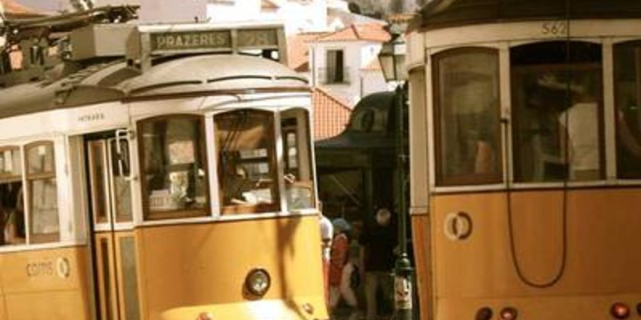

WEB PROGRAMMING · RAI SWONU · 202637725
E2 · Responsive images
Completed responsive picture

Local JPEG and WebP files contain the same Lisbon photograph and use a 2:1 aspect ratio. The browser chooses a format and width using your screen size and pixel density.
Actual file sizes
| Dimensions | JPEG | WebP | Reduction |
|---|---|---|---|
| 400 × 200 | 21,448 bytes | 13,466 bytes | 37.2% |
| 800 × 400 | 53,204 bytes | 28,346 bytes | 46.7% |
Measured on these files; format savings vary with content and encoder settings. The 400 and 800 files were encoded at JPEG quality 85 and WebP quality 80.
Working JPEG fallback
Code
<picture>
<source type="image/webp" srcset="../assets/photo-400.webp 400w, ../assets/photo-800.webp 800w"
sizes="(max-width:650px) calc(100vw - 36px), 800px">
<img src="../assets/photo-800.jpg"
srcset="../assets/photo-400.jpg 400w, ../assets/photo-800.jpg 800w"
sizes="(max-width:650px) calc(100vw - 36px), 800px"
alt="Two yellow trams on tracks along a Lisbon street"
width="800" height="400" fetchpriority="high">
</picture>